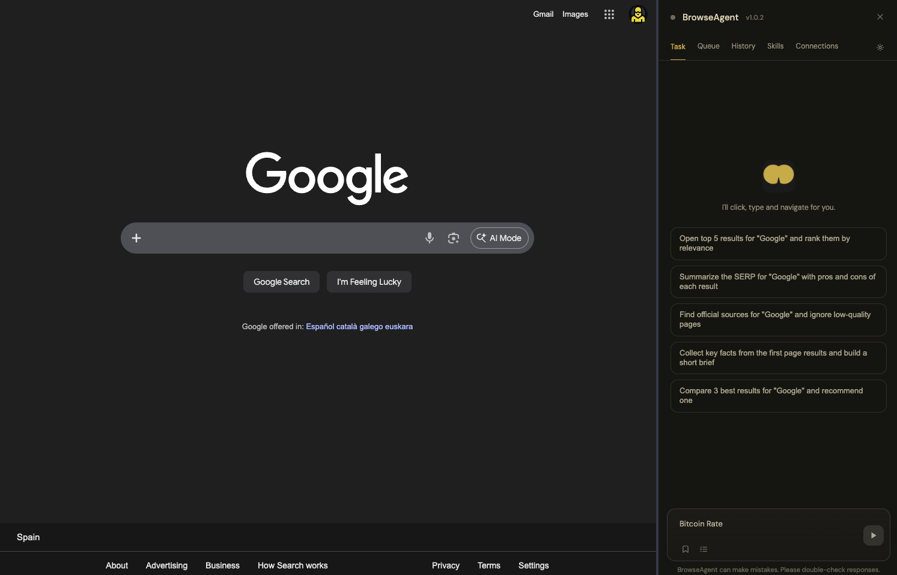
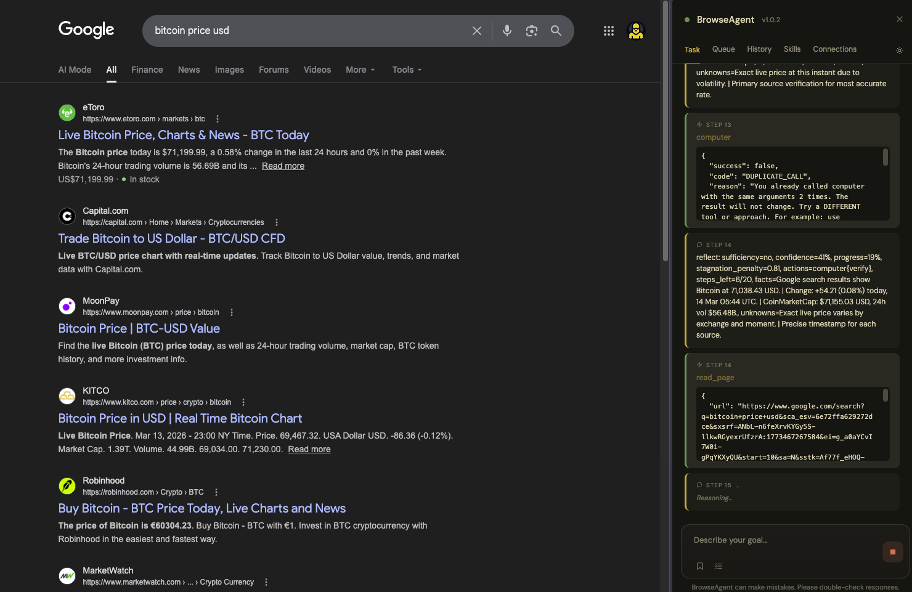
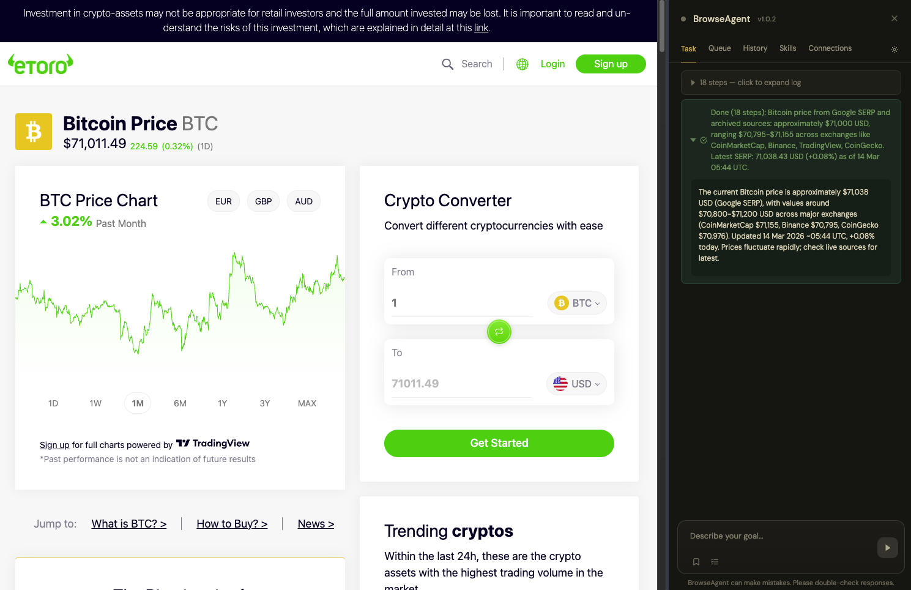
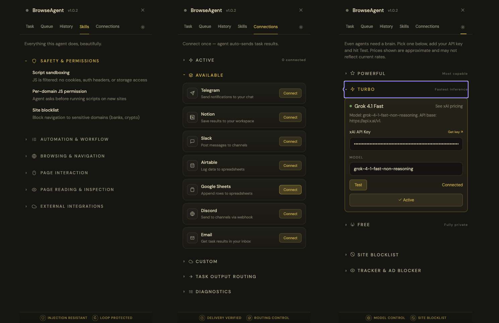

01
Start with a prompt
Describe the outcome you want. BrowseAgent turns it into browser actions.
Prompt state

Automate work in Chrome with plain English — BrowseAgent clicks, reads, fills forms, and navigates for you.
Write the goal, watch the run, keep the result. The workflow stays visible inside Chrome from start to finish.
Describe the outcome you want. BrowseAgent turns it into browser actions.

The panel shows what the agent is doing while it runs, so the flow stays understandable.

End with a usable answer, send it to a tool, or keep going from the same panel.

Built to read pages, take action, route output, and keep execution reviewable.
Move across pages, tabs, and frames without losing context.
Example: open a search result, jump between tabs, then resume from a saved checkpoint.
Click, type, scroll, and wait through real websites, not just static demos.
Example: fill a multi-step form or drive a research flow across dynamic pages.
Read what is on screen with structured page understanding, search, and extraction.
Example: summarize a SERP, extract a pricing table, or find the right button from natural language.
Approve plans, queue longer runs, and recover without starting over.
Example: approve the plan first, close the panel, then come back to the finished task.
Guardrails keep the agent from drifting into bad pages, repeated actions, or risky moves.
Example: pause on sensitive actions, reject duplicate calls, and ask before running scripts on a new domain.
Push results into the tools you already use instead of copying them by hand.
Example: post updates to Slack, write rows to Sheets, or send a final brief to Notion.
A focused toolset for reading pages, taking action, and finishing work inside the browser.
See the page, search it, and pull out the parts that matter.
Move through sites, tabs, and frames without breaking the flow.
Take the actions a real operator would take to move the task forward.
Call APIs, route output, save progress, and finish runs cleanly.
Manage tasks, destinations, and provider configuration without switching tools.

Use a hosted provider or run locally. The extension talks to the model directly from your browser.
grok-4-1-fast-non-reasoning
qwen3-vl:8b.
Install BrowseAgent, connect a provider, and run your first real browser task in a couple of minutes.
Open source. Chrome-native. Built for operator-style browser workflows.